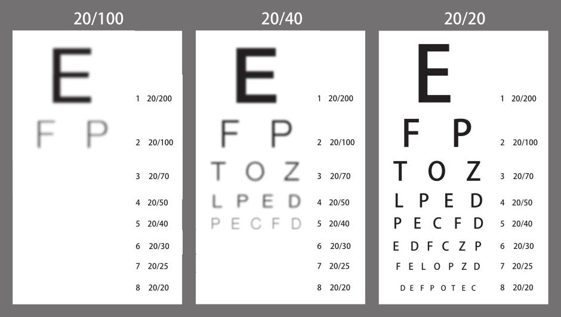

“我们断定，伊拉克违反了联合国决议和禁令，继续实施大规模杀伤性武器计划。巴格达拥有生化武器和射程超过联合国公约许可范围的导弹；如果不进行核查，它很可能在10年内掌握核武器。”1
语言虽然平淡无奇，但鉴于这样的开场白是在2002年10月发表的，所以颇能抓住人心。13个月前恐怖分子实施了“9•11” 暴行。美国入侵阿富汗，推翻了庇护奥萨马•本•拉登的塔利班政权。接着，乔治•W•布什政府将注意力转向萨达姆•侯赛因统治的伊拉克：该国与“基地”组织有瓜葛；“9•11”恐怖袭击事件背后有伊拉克的支持；伊拉克对中东其他国家和该地区蕴藏的石油是个威胁；伊拉克没有按照联合国要求销毁大规模杀伤性武器；伊拉克正在大量囤积物资，危险程度日渐提高。白宫声称，萨达姆•侯赛因有能力或者说不久之后就会有能力袭击欧洲甚至美国。批评人士回应道，政府很久以前就决定攻打伊拉克，现在正通过生动的语言来夸大威胁，如康多莉扎•赖斯就说过，“我们不希望冒烟的枪变成蘑菇云”。批评人士认为白宫以此来诱导民众支持战争。2 《国家情报评估》第2002-16HC号报告正是在此时发布的。
《国家情报评估》体现的是中央情报局、美国国家安全局、美国国防部情报局及其他13家机构的共识。这些机构作为一个整体，被称为“美国情报圈”。
情报圈的确切预算数字属于保密信息，粗略的估计是超过500亿美元，雇员达10万人。其中2万人是情报分析员，他们的工作不是搜集情报，而是解释情报，判断其对国家安全的意义。3 这个异常复杂、开销巨大、经验丰富的情报团体在2002年10月断定：布什政府关于伊拉克大规模杀伤性武器的关键结论是正确的。许多人被说服了。情报工作的宗旨是要向权力机构说出事实，而不是向当前的主管政客讲述他们希望听到的话。而《国家情报评估》的报告对政客们而言，恰好解决了这个麻烦。现在，民众相信，萨达姆•侯赛因已经启动大规模杀伤性武器计划，大量生产致命武器，威胁正在增大，这是既定事实；只有那些被政治蒙蔽双眼的人才会否认这样的事实。至于怎么应对，又是另外一个问题。就算是布什政府的尖锐批评者，例如嘲讽布什及其幕僚为“布什们”的托马斯•弗里德曼，也确信萨达姆•侯赛因在某处隐藏了某些秘密。
现在我们知道这些“事实”是捏造的。2003年入侵伊拉克后，美国将这个国家翻了个底朝天，寻找大规模杀伤性武器，可是一无所获。这是现代历史上最恶劣的情报错误之一（有人认为没有之一）。美国情报圈集体蒙羞。一时间，媒体谴责、官方调查铺天盖地。当国会中各种委员会的诘责风暴轮番袭来时，情报官员又要在听证会上经历熟悉的质询程序，在那种场合，他们汗流满面，表情阴郁。
到底哪里出了问题？一个解释是，情报圈受到白宫的胁迫。情报披上了政治外衣。但是官方调查否认了这种说法。罗伯特•杰维斯（Robert Jervis）的观点与官方一致，他的表态让我更加信服，因为杰维斯在情报研究领域有着40年的良好记录，见解深刻，并且超越党派政治。他是《情报为什么失灵了》（Why Intelligence Fails）一书作者，该书详细剖析了美国情报圈对1979年伊朗革命的预测错误（杰维斯当时为中央情报局做了一次事后剖析，其内容被秘密封存数十年）以及关于萨达姆•侯赛因的大规模杀伤性武器的错误警报。在后一个案例中，杰维斯断定，美国情报圈做结论时，态度是真诚的。这种说法有道理。
“可是结论不合理，”也许你会这么认为，“是错误的！”这种反应完全可以理解，但也不正确。记住，我们的问题不是“情报圈的判断正确吗”，而是“情报圈的判断合理吗”。回答这个问题需要我们想象自己处于当时做预测的那些人的位置，也就是说，我们只能分析当时可以获取的情报。这些证据足以诱导地球上几乎所有主要的情报机构在不同程度上怀疑，萨达姆隐藏了某些东西。这不是因为他们瞥见了萨达姆的隐藏行为，而是因为萨达姆的言行使他看起来像是做这种事的人。他与联合国武器核查员玩起了藏猫猫的游戏，而这个游戏可能导致一次外国干预，使他失去权力。对这样的行为，还能有其他解释吗？
不过，精神上的时间旅行比绝大多数事情都要难。即使是历史学家，设想自己处于当时某人的境地，并且不会因为知道后续情况而影响心态，也是很难的事。所以，“情报圈的判断合理吗”是个很有挑战性的问题。而回答“情报圈的判断正确吗”这个问题则是瞬间的事。正如我在第二章所述，这样的情形诱使我们进入“诱惑与转换”模式：用简单问题取代有难度的问题，说出前者的答案，然后真诚地相信我们已经回答了后者。
下面这个特定的诱惑与转换情景既很普遍又会造成危害：用“它的结果好吗”取代“这是一个好的决定吗”。精明的扑克牌玩家认为这种错误是菜鸟的愚蠢所致。新手也许会高估下一张牌让他赢牌的可能性，为此他下一把大注。巧的是幸运之神正好降临，他真的赢牌了。可是，赢牌并不能反推出他这次愚蠢的下注是明智之举。相反，老手也许能正确地预见到赢牌的可能性很大，同样下了大注，结果运气不佳，输了，但这并不意味着他的下注之举是不明智的。优秀的扑克牌手、投资人和执行官都知道这一点。如果他们不知道，就无法在其职责范围内保持优异表现，因为不懂得这个道理，他们从经历中学到的就是错误经验，这会导致今后他们的判断越来越糟糕。
所以，像罗伯特•杰维斯那样认为情报圈的结论既合理又错误，这不是自相矛盾的说法。但是，杰维斯并没有为情报圈开脱，这才是重点。“他们不仅犯了错，而且这些错误本来是可以纠正的，”他这样评论情报圈的分析，“他们的分析本可以而且应该更好。”这很重要吗？从某种意义上说，不重要。“即便是分析工作做得更好，其结果也只会是人们对情报评估报告产生更多疑虑，而不是得出截然不同的结论。”所以，情报圈仍然会断定萨达姆拥有大规模杀伤性武器，只是信心大打折扣。这听起来像是温和的批评，但事实上，它威力巨大，因为来自美国情报圈的信心不足的结论可能会产生重大影响：如果国会某些人在是否支持攻打伊拉克的问题上，设置了“超出合理的不确定性即否决”这样的门槛，那么一份认为萨达姆有60%或70%的可能性在大量生产大规模杀伤性武器的评估报告是不会让他们满意的。授权使用武力的国会决议也许不会通过，美国也不会发动进攻。还有比数千条人命和数万亿美元更大的赌注吗？4
但是，《国家情报评估》2002-16HC号报告没有说拥有的概率是60%或者70%。它说的是：“伊拉克拥有……”，“巴格达拥有……”。这样的陈述完全否定了一切意外的可能性，就如同说“太阳在东方升起，在西方落下”。2002年12月12日白宫的一次通气会上，中央情报局局长乔治•特内特（George Tenet）用了这样的言辞：“十拿九稳”。后来他抗议说，媒体断章取义，不过这无关紧要，因为“十拿九稳”确实概括了情报圈的立场。这不同寻常。情报分析总是会有不确定性，而且经常是巨大的不确定性。分析师知道这一点。可是在伊拉克大规模杀伤性武器的问题上，情报圈沦为傲慢自大的牺牲品。其后果是，它不仅发布了错误的报告，而且当它声称自己不可能犯错时，它也错了。事后剖析甚至表明，情报圈从未认真考虑过它可能错了。“没有‘红队’攻击主流观点，没有来自魔鬼代言人的分析，没有报告提供反面可能性，”杰维斯写道，“最令人吃惊的是，没有人提出与现在受到认同的正确观点相近的结论。”对这场情报灾难进行调查的总统特派小组尖锐地批评道：“未能得出萨达姆已终止违禁武器计划的结论是一回事，而连考虑这样一种可能性都没有做到，则是另外一回事。”5
美国情报圈是个庞大的官僚体系，甚至对于重大错误所引发的冲击也反应迟钝。杰维斯告诉我，在他完成对1979年伊朗革命—那个时代最重大的地缘政治灾难—预测失败的事后剖析之后，“我见到（中央情报局）政治分析办公室的主管，她说，‘我知道你没有从我们这里得到任何信息，这一定加剧了你的不安，没关系，现在我们正打算举行一次大规模会议，与你共同探讨分析’。然后就没有下文了。这次会议从未召开过”。大规模杀伤性武器预测失败带来的冲击不同于以往，这个官僚体系的根基也因此受到撼动。“他们算是上心了。”杰维斯说道。6
2006年，美国情报高级研究计划局成立。它的使命是资助有可能提高情报圈的灵活性和效率的前沿研究。正如其名所示，情报高级研究计划局的模式以美国国防部高级研究计划局为参照，后者是知名国防机构，它的军用技术研究对现代世界产生过重大影响。国防部高级研究计划局的研究工作甚至对互联网的发明都有贡献。
2008年，16家情报机构所构成的网络的主管者—美国国家情报局要求国家研究理事会组建一个委员会，其宗旨是开展关于如何准确预测的综合研究，并帮助情报圈有效运用研究成果。按照华盛顿的标准，这是个大胆的（或者说鲁莽的）要求。一个官僚体系也许会花钱请世界上最受尊敬的一家科研机构提交一份结论可能是这个体系愚蠢无能的客观报告，但是这种机会可不会天天都有。
一批来自不同学科的杰出科学家成为委员会成员，主席是心理学家巴鲁克•费斯科霍夫（Baruch Fischhoff）。我也是成员之一，很可能是因为我在2005年出版的《专家的政治预测》一书中提出了“你能打败掷飞镖的黑猩猩吗”这一挑战。两年后，我们发布了一份百分之百阿奇•柯克伦风格的报告：先调查，后发言。“美国情报圈不应该依赖具有如下特征的分析方法：违反有详细记录的行为准则；看起来有吸引力，实际上毫无效用。”该报告评论说。情报圈应该“在尽可能真实的环境下严格检验当前采用和拟用的方法。这样一种基于事实的分析方式将提高必要的持续学习能力，以确保情报圈比美国的对手更加精明灵活”。7
这个观点简单易懂，可是，正如医学长期以来的实际情况一样，它常常受到忽视。例如，中央情报局给分析师发了一本由前分析师理查兹•霍耶尔（Richards Heuer）编写的手册，其中列出了心理学的相关见解，包括一些会让分析师的观念出错的偏见。这是一项有意义的工作，其意义在于，分析师对心理学知识的基本了解将有助于避免认知陷阱，进而帮助他们做出更好的判断。但是，果真如此吗？没有人知道。从未有人验证过。一些分析师认为这项培训从直观上说非常具有说服力，无须对其进行检验。这论调听起来熟悉吧？
即便是对于价值500亿美元的问题—“情报分析师的预测准确程度有多高”，我们也无法回答。当然，有人认为他们知道答案。高级官员也许会宣称，情报圈的预测在80%甚至90%的时间内是正确的。可是这只是猜测。就像19世纪的医生们确信他们的治疗方法治愈了80%或90%的病人一样，官员们的话可能是正确的，或者接近正确，也可能大错特错。缺少衡量准确率的标准，就缺少有效方法来确保情报分析师为准确性负责。
注意上一个句子中的“有效”一词。国家情报局局长被拽入国会接受质询，这是准确性问责。这样的质询也许没有被公开，也许是任性之举，除了政治作秀之外没有其他目的，但也算是问责。相比之下，出了问题之后，有效问责需要的不是慌忙补救。它需要的是对准确性实施系统的追踪检验，理由嘛，前文已经全部列出。而美国情报圈的预测准确性从未得到系统性评估。
取而代之的是，对过程的问责：情报分析师被告知在进行研究、思考和判断时应该经过哪些步骤，并且要严格遵守这些标准。举例来说，考虑过其他假设吗？寻找过相反的证据吗？这些要求都是合理的。但是，预测的关键不是按部就班地完成“如何做预测”清单上的所有选项，而是要预见到未来。对过程而非准确性负责就像是，医生保证洗过手、检查病人并分析了所有症状，却完全没有检验治疗方法是否有效。
情报圈不是唯一以这种方式运转的团体。提供或购买预测但不认真检验预测准确性的组织的名单之长令人吃惊。不过，得益于伊拉克大规模杀伤性武器预测失败造成的冲击和国家研究理事会报告的推动，以及一些尽职尽责的公务员的努力，情报圈决定进行整改。确切地说，是情报高级研究计划局做出了这样的决定。
情报高级研究计划局是一家情报圈以外人士鲜有耳闻的机构，这样做也是有充足理由的。情报高级研究计划局没有开展秘密行动的间谍和解释情报的分析师。它的职责是确认和支持高风险、高回报、有可能提高情报圈能力的研究项目。所以，它和国防部高级研究计划局相似，但是后者知名度高得多，因为它规模更大，成立时间更长，而且经常为震撼力十足的技术提供资金支持。大多数情报研究项目没有这样的吸引力，但对国家安全可能同样重要。
2010年夏，情报高级研究计划局两名官员，贾森•马西尼（Jason Matheny）和史蒂夫•里伯（Steve Rieber），探访了加州伯克利。我和芭芭拉•梅勒斯在旧金山一家周边风景绝佳的酒店遇到他们。在那里，他们告诉了我们一些像附近的风景那样令人愉快的消息。他们计划实施国家研究理事会报告上的关键建议，而我曾经自信地预测这部分建议会被束之高阁。情报高级研究计划局将会举行一场大规模比赛，目的是了解谁能想出最佳方法来提供情报分析师每天都要提交的那种预测，例如，突尼斯总统将在下个月飞往某个舒适的避难所吗？中国暴发的H5N1禽流感的死亡人数会在未来6个月达到10人吗？未来一年欧元汇率会跌至1.20美元以下吗？
情报高级研究计划局正在寻找难度适中的问题（可称之为“宜居带问题”），既不能特别容易，以至于《纽约时报》的任何有心读者都可以正确回答，也不能难到世界上无人可以回答。情报高级研究计划局认为这种难度适中的问题最适合发现新的预测天才，同时也最适合检验培养天才的新方法。拟议中的比赛在规则上与我过去设立的EPJ比赛大为不同：他们最长的问题通常比我最短的问题还要短。行动中心不希望浪费资金来鼓励人们做我们现在知道可能性极小的事情。人类的视觉系统绝无可能在100米之外看清斯内伦视力表最下面一行符号，哪怕从现在起一刻不停地锻炼你的眼部肌肉，也不可能做到。正如EPJ和其他研究项目所示，人类认知系统永远无法预测未来几年个人或国家命运的转折点，哪怕是大胆寻找超级预测家，也无济于事。
情报高级研究计划局的计划是为顶尖研究者提供比赛形式的激励，以便他们对宜居带问题做出准确的预测。8 各研究团队将相互竞争，还要和一个独立的对照小组竞争。各团队必须战胜对照小组成员的集体预测，即“群体的智慧”，而且要求的差距之大，让我们所有人都感到惊讶。第一年，情报高级研究计划局希望参赛团队与对照小组的差距为20%，到了第四年，这个数字提高到50%。
但是，这只是情报高级研究计划局计划的一部分。研究人员可能在每个团队内部开展阿奇•柯克伦式的试验，以评估到底有哪些手段有助于击败情报高级研究计划局内部的对照小组。例如，研究人员也许会认为，为预测者提供基础培训将会提高他们的准确率。可是如果仅仅是培训所有预测者，这能证明什么？预测者的准确率提高，有可能是因为培训发挥作用，或者是问题更加简单，又或者是预测者就是有这样的运气。如果准确率下降，可能是因为培训适得其反，也可能是这种情况：准确率本来就会下降，培训只是减小了下降幅度。我们无法知道真正原因。还记得在哪里见过这个问题吗？这是医学史上一直以来医生都要面对的问题。阿奇•柯克伦想到了解决方案：停止不懂装懂，开始试验。试验方法为：只给一个随机选择的预测者团队提供培训，其他团队都保持原样；最后，比较结果。如果受过培训的团队预测的准确率提高，而未受训的团队不变，那就说明培训是有效果的。
预测对象的范围不受限制，但我们需要大量预测者来拓展预测对象。我和同事在博客和专业网站上留言：“你想预测世界的未来吗？现在有个机会，你甚至不必离开家，只要每天抽出一点儿时间思考政治经济谜团，然后给出最棒的预测。”我们的招募工作获得了回报。第一年，数千志愿者报名，大约3200人通过了我们的心理测试的初步考验，开始预测。我们将研究团队和项目统称为“精准预测项目”。
这种规模的项目一年花费高达数千万美元，但这不能体现情报高级研究计划局这种官僚机构举办此类比赛所具有的勇气。毕竟，情报圈的年度预算约为500亿美元，比大多数国家年度国内生产总值还要高。在这座钱山面前，情报高级研究计划局举办比赛的花费不过是一个蚁丘。真正体现其勇气的是这次比赛可能揭示的事实。
下面是一个可能被揭示的事实。设想一下你召集了几百名普通人来预测地缘政治事件。你会看到，他们改动预测的频率有多高，事后证明这些预测的准确率有多高。然后，你用这些信息来识别出40%左右最优秀的预测者。每个人都会提交大量预测。这次，你要获取“群体的智慧”，即计算所有参与试验人员预测概率的平均值，但在计算时要提高那40%的顶尖预测者的权重。接下来，给平均概率做最终的调整：将这个值“极端化”，使之接近100%或0。例如，如果预测概率为70%，可以提高到85%；如果是30%，可以降至15%。9
现在，假设你通过上述方法得出的预测击败了其他任何团队的预测，同时这种方法也是各类预测方法中最优的，而且优势比较明显。你甚至还战胜了政府内部那些可以接触机密信息的专业情报分析师，不过，双方差距保密。
想想这个结果对专业情报人员来说将是多么震撼，他们可是毕生都在从事地缘政治事件预测，却被几百个普通人和一些简单的算法打败了。
这是一件真事。我描述的是我们在情报高级研究计划局举办的比赛中获得冠军所采用的方法。它不包含任何令人炫目的新东西。即便是极端化调整，也是以下面这样一个相当简单的见解为依据的。当你搜集一大群人的判断来计算“群体的智慧”时，他们各自持有的相关信息全部汇集到你这里，而这群人自己是无法获取全部信息的。某人只知道其中一部分，另一个人知道更多，诸如此类。如果每个人都掌握了所有信息，将会发生什么呢？他们将更加自信，然后修改预测概率，使之接近100%或0。在这之后，你再计算“群体的智慧”时，结果将更加极端。当然，不可能让每个人都掌握所有相关信息，因此，为了模拟在人人都掌握全部信息的前提下集体预测的情况，我们做了“极端化”处理。
现在，得益于情报高级研究计划局的帮助，我们知道几百名普通人和一些简单算法不仅能与得到数十亿美元设备支持的专业人士竞争，而且可以击败他们。10
这还只是情报高级研究计划局的决定有可能揭露的令人不安的事实之一。假如这次竞赛发现没有任何数学魔法帮助的普通人可以战胜整个情报圈，又会发生什么呢？可以想见那种威胁有多么大。
道格•洛奇（Doug Lorch）留着灰胡子，头发稀疏，戴着眼镜，看起来对任何人都不会构成威胁。他就像计算机程序员，也的确曾经在IBM从事编程。现在他退休了，和妻子住在圣芭芭拉一条安静的街道，妻子是一位画家，创作可爱的水彩画。洛奇在脸谱上的头像是一只鸭子。他喜欢在阳光照耀的街道上驾驶自己的Miata小敞篷车，享受加利福尼亚的和风，一天中有大量时间就这样度过。道格完全不具备国际事务领域的专业知识，不过他对世界形势有着浓厚的兴趣。他订阅《纽约时报》，可以在地图上找到哈萨克斯坦。所以，他志愿参加精准预测项目。每天有大约一个小时，家里的餐桌成为他的预测中心。他打开笔记本电脑，上网浏览新闻，尝试着预测世界的命运。
在第一年，道格回答了104个问题，例如“截至2011年12月31日塞尔维亚会被正式接纳为欧盟成员国吗”，“伦敦黄金市场金价将在2011年9月30日超过1850美元/盎司 [1] 吗”。预测的数量不少，但还没有完全反映道格的工作。
在EPJ研究中，我曾要求专家对每个问题只提交一条预测，然后评分。与之相比，情报高级研究计划局的比赛鼓励预测者实时更新预测。如果组委会提出一个预测期限为6个月的问题，预测者可以先做初始判断，例如在6个月内某事件发生概率为60%，第二天他又读了一些新闻，新闻内容让他确信，应该把概率提高至75%。为了评分方便，这些经过调整的预测后面将单独计算。如果一周之后，此人的预测没有任何变动，这7天时间的预测概率就保持为75%。也许之后又有新的信息使他确信应该将概率降至70%，在下一次变动前他的预测就保持在这个位置。这一过程反复发生，在6个月期限结束后，这个问题就被关闭，不再接收预测。此时，这名预测者所有的预测将被打包进行计算，得出在相关问题上最终的布莱尔得分。这还只是一个问题。在4年时间内，EPJ项目组委会要求数千名预测者对近500个国际问题进行判断，产生了超过100万条预测。在个人层面，预测数量也急剧增加。仅1年时间，道格•洛奇就提交了大约1000份预测。
道格的准确率像他的体格一样令人印象深刻。第一年年末，道格的总布莱尔得分为0.22，位列参加精准预测项目的2800名选手的前1/5。还记得吗，布莱尔得分评估的是预测与现实之间的差距，2.0表示预测与实际情况完全相反，0.5表示随机猜测的分数，0表示预测正中目标。因此，考虑到问题的难度，0.22乍看起来引人注目。看看下面这个问题，发出时间为2011年1月9日：“2011年12月31日之前意大利是否会重组债务，或者说，债务违约？”现在我们知道正确的答案是不会。为了得到0.22的分数，在这个问题开放的11个月期限内，道格预测不会发生债务重组或者违约的平均概率必须达到约68%。考虑到金融恐慌的浪潮在此期间席卷欧元区，这个信心值还真不赖。不仅是这个问题，在所有问题上，道格的预测水平平均都要达到这个准确率。
第二年，道格加入一个超级预测家团队，表现更加出色，最终的布莱尔得分为0.14，使他成为2800名精准预测项目志愿者中的状元。他还以40%的优势击败了一个预测市场的商家们，在这个市场里，同一个问题会出现不同的预测结果，交易商们根据不同的预测结果买卖期货合约。道格是唯一击败“极端化”算法的人，而且他战胜了对照组的“群体的智慧”，差距超过60%。这个成绩具有怎样的意义呢？情报高级研究计划局启动了一个耗费数百万美元的研究项目，允许研究人员随意运用预测学教科书上提及的各类技巧以提高准确性。情报高级研究计划局为该项目制定了4年期绩效目标，道格的表现意味着，他单枪匹马就超过了这个目标。
无论从人类的哪一个标准来看，道格•洛奇都称得上成就非凡。唯一能遮住道格光芒的是上帝才具有的无所不知，也就是说布莱尔得分为0，可是这就像泰格•伍兹在鼎盛时期未能一杆进洞而受到鄙视一样，没有意义。
道格•洛奇的成就使他成为一个威胁。这个人完全没有适用的经验和教育背景，完全没有渠道获取机密信息。他获得的唯一酬劳是价值250美元的亚马逊网站礼券，这是所有的志愿者在赛季末都能得到的。道格•洛奇只是一位退休人士，他没有收集邮票、打高尔夫或者制作飞机模型，而是来做预测。对此他非常擅长。在中央情报局总部工作的经验丰富的情报分析师，有一份薪水，有安全许可，还有一张办公桌，即便是他们，想要做到更加出色，空间也已经很小。有人可能会问，既然给道格一张礼券，就能让他完成地缘政治预测工作，为什么美国每年还要在这方面花费数十亿美元。
毫无疑问，如果道格•洛奇是拥有独特天赋的智者，他不会对现状构成任何威胁。人们可以涉足的预测如此之多，无须和道格比拼。但道格不是独一无二的。前面我们已经提过来自内布拉斯加的农业部退休雇员比尔•弗莱克。在2800名志愿者中，还有58人的成绩在第一年位列前茅。他们是第一批超级预测家。在第一年年末，作为一个整体，他们的布莱尔得分是0.25，与之相比，其他所有预测者的平均得分为0.37。此后几年，二者差距拉大，到赛季末，超级预测家的成绩比普通预测者高出60%。衡量超级预测家出色程度的另一个指标是他们能预测多久之后的事件。4年比赛期间，超级预测家对未来300天的预测比普通预测者对未来100天的预测还要准确。换句话说，普通预测者的预见能力必须增强为原来的3倍，才能看到超级预测家能看到的风景。
这种程度的成绩差距会产生多大的影响？我们打个简单的比喻，一位普通预测者的成绩是布莱尔得分平均值，相当于20/100的视力 [2] 。验光师给这位预测者一副眼镜，使他的视力提高至20/40。这个提升幅度为60%。它的影响有多大？20/40的视力与鹰眼视力相比还有一段距离。但是，请看下页的斯奈伦视力表。当视力从20/100变化至20/40时，眼睛可以看清楚第二行至第五行的字母，此时，你将获得一系列新的能力：接住飞来的棒球，在街上认出朋友，看清合同上的小字，避开迎头相撞的危险。总而言之，生活将会发生变化。

现在，请注意，这些超级预测家是非专业人士，只在闲暇时间搜集任何可以挖掘到的信息来预测全球事件。但是，他们想方设法取得了如此优异的成绩，以至于专业人士也要努力超越之，而且必须用足够的差距来证明自己配得上现在的职位、薪水和养老金。直接比较超级预测家和情报分析师肯定非常有趣，但这种比较将会受到严格限制。不过，2013年11月，据《华盛顿邮报》编辑戴维•伊格内修斯（David Ignatius）报道，“参加（精准预测）项目的一名选手”告诉他，超级预测家的水平“比情报圈分析师的平均水平高出30%，后者还能看到窃听来的情报和其他秘密数据”。11
情报高级研究计划局注资启动这项比赛时，就知道可能出现上述情形，所以我们说这样的决定如此不同寻常，原因就在于此。测试准确性的想法也许符合某些组织的利益，但是，组织是由人构成的，而人的利益各不相同，大多数人显然对现状感到满意，想要维持和加强现状。收入丰厚的知名评论员不愿冒着名声受损的风险而公开测试其预测的准确性，与他们相似的是，组织内部执掌权力的人也不太可能尝试参与预测比赛，因为这类比赛意味着他们的判断将会得到其他人的检验。在总裁办公室上班的鲍勃可不想听到（更不愿别人听到）在邮件收发室上班的戴维比他更擅长预测公司业务发展趋势的消息。
不过，情报高级研究计划局所做的仅仅是将情报圈的使命置于相关人员的利益前面，或者，至少是排在那些不想撼动这艘官僚主义大船的内部人士前面。
注释
[1] 1盎司=28.35克。—编者注
[2] 如果你的视力是20/20，说明在距视力表20英尺处，你能够看清“正常”视力所能看到的东西。如果你的视力是20/40，说明正常视力在距视力表40英尺处可以看到的东西，你要在20英尺处才能看到。20/100则意味着，正常视力在距视力表100英尺处可以看到的东西，你仍然需要在20英尺处才能看到。—编者注